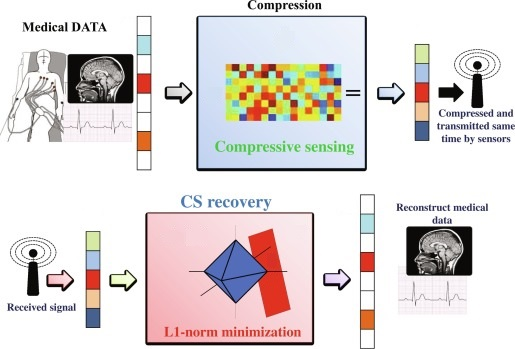

4.1 Motivation for Sparsity-Aware Learning
Why we want models that can set coefficients to zero.
These notes walk through the lecture slides. The original deck is unchanged; use (slides) on the course hub if you want that PDF.
The figures follow Deisenroth, Faisal, and Ong, Mathematics for Machine Learning, and Theodoridis, Machine Learning: A Bayesian and Optimization Perspective.
1. Bias-variance trade-off
A simple linear model is
Plain least squares is not the only way to estimate . The goal of this module is better accuracy and better interpretability.
| Regime | What least squares does |
|---|---|
| , roughly linear | Low variance, low bias |
| but not by much | High variance; a small change in the training rows can swing the coefficients; overfitting |
| No unique least-squares estimate; variance is “infinite” |
As the model gets more flexible, interpretability usually falls. Irrelevant columns add complexity. Setting some coefficients exactly to zero would drop those variables.
Solution. Constrain or shrink the coefficients: give up a little bias to cut variance, and predictions improve.
2. Compressed sensing
Compressed sensing (CS) tries to acquire as few samples as possible, as long as those samples still encode a compressed representation of the signal.

Let be a sensing matrix applied to an unknown signal to get observations . Let be a dictionary in which has a sparse representation
From one gets . Given and (or the product ), one can recover by an program if at most coordinates of are nonzero.
The linear system is under-determined, so it has an infinite number of solutions in general. The extra fact is that the true model is sparse: only a few coordinates are nonzero.
3. The -norm
The -“norm” counts nonzero coordinates. That is the most direct sparsity measure.
It is not usable as a training penalty: it is not differentiable, and optimizing it is NP-hard. Other with are non-convex, which is also a hard optimization problem. Later notes use and instead.
4. Practical examples
- NLP. Most words in a document never appear, or appear once. A bag-of-words vector is sparse: one coordinate per vocabulary word, mostly zeros.
- Image processing. Many pixels are background. Keeping only the useful features or regions gives a sparse representation, which is cheaper to store and to compute with.
5. Emerging applications
- Medical imaging. Sparse MRI aims to reconstruct from fewer measurements, which shortens scans.
- Signal processing. Compressive sensing for denoising and reconstruction recovers a sparse signal from undersampled measurements.
- Recommendation. User–item matrices are sparse. Sparsity-aware methods can still suggest items when the history is thin (the cold-start setting).
6. Practice
-
In which regime is the least-squares variance “infinite,” and why?
-
Why is the -norm a natural sparsity penalty, and why do we not optimize it directly?
-
What extra information lets compressed sensing pick one solution from an under-determined system?